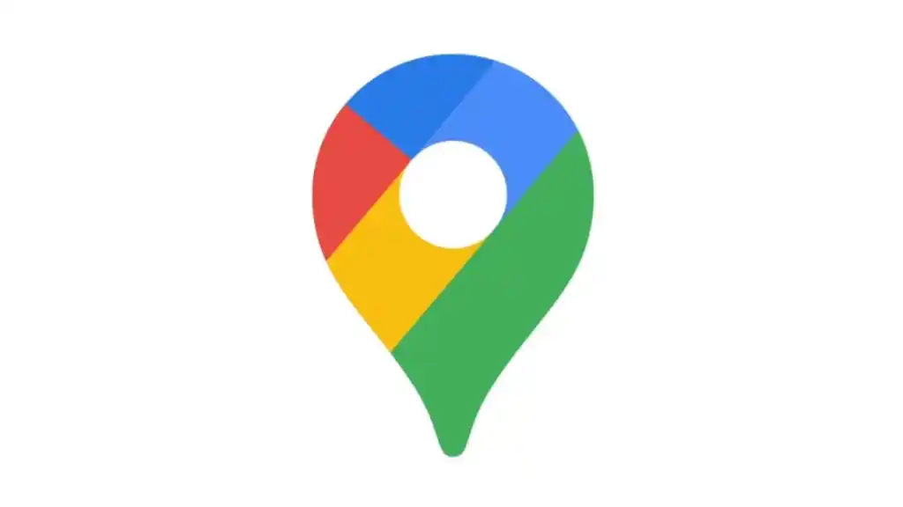
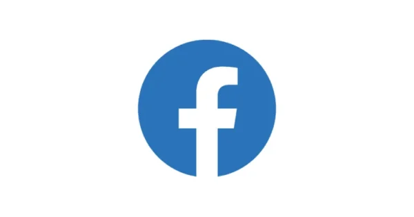

Google Maps

Fecha de lanzamiento: 08 de febrero de 2005.
Google Maps fue desarrollado a partir de la compra en 2004 de Where 2 Technologies, una empresa de mapeo
fundada en Sídney, Australia, por: Lars Rasmussen, Jens Rasmussen, Noel Gordon, Stephen Ma.
Si bien Google Maps ofrece una amplia gama de funciones útiles, hay una característica en particular que se
considera clave para su enorme popularidad: la capacidad de obtener direcciones paso a paso.
- Cartografía digital
- GPS
- Bases de datos
- IA
- Lenguajes de programación: C++, Java, Javascript y python.
Link Google maps
Facebook

Fecha de lanzamiento: 04 de febrero 2004.
Mark Zuckerberg es el fundador de Facebook, red social que actualmente se conoce como Meta.
La pregunta sobre qué característica lanzó a la fama a Facebook es interesante, ya que no fue una sola cosa,
sino una combinación de factores que se fueron sumando y creando un fenómeno social sin precedentes.
- Facilidad de uso
- Conexión con amigos y familiares
- Expansión más alla de las universidades
- Adaptación a dispositivos moviles
- Lenguajes de programacion: C++, PHP, Hack, Java, Python, Javascript
- Bases de datos: Cassandra, MySQL, HBase
- Linux
- Apache
- Memcached
- Thrift
- React
- GraphQL
Link Facebook
X (Twitter)
Fecha de lanzamiento: 21 de marzo 2006.
Jack Dorsey, Noah Glass, Biz Stone y Evan Williams fueron los creadores de Twitter, despues comprada por Elon
Musk y renomabrada a X.
La característica que catapultó a Twitter a la fama no fue una sola, sino una combinación de factores que la
hicieron única en su momento. Sin embargo, hay algunas que destacan especialmente:
- Sus 140 caracteres
- Inmediatez y democratización de la informacción
- Hashtags
- Faciliad de uso
- Conexión en tiempo real
- Lenguajes de programación: Scala, Java, Python, Ruby, C++.
- Base de datos: Cassandra, MySQL, HBase
- Hadoop
- Storm
- Kafka
Link X
Instagram
Fecha de lanzamiento: 06 de octubre 2010.
Kevin Systrom y Mike Krieger son los fundadores de Instagram.
Si bien Instagram se ha convertido en un gigante de las redes sociales, su ascenso meteórico se debe a la
combinación de varias características innovadoras que lo diferenciaron de otras plataformas. Sin embargo,
hay una que destaca por encima de las demás y que fue clave para su éxito inicial: Los filtros
fotográficos.
- Python
- Django
- PostgreSQL
- AWS
- Redis
- Celery
Link Instagram
WhatsApp

Fecha de lanzamiento: 22 de enero 2009.
Jan Koum y Brian Acton son los creadores de WhatsApp.
La pregunta sobre qué característica lanzó a la fama a WhatsApp es muy interesante. En realidad, no fue una
sola característica, sino una combinación de factores que, junto con el momento justo, lo convirtieron en el
gigante de la mensajería instantánea que conocemos hoy.
- Mensajeria gratuita
- Faciliad de uso
- Multiplataforma
- Cifrado de extremo a extremo
- Capacidad de enviar fotos y videos
- Protocolos de comunicación: XMPP, protocolo propio.
- WebSockets
- RESTful APIs
- Cloud Computing
- Lenguajes de programación: Kotlin, Swift, Erlang, C++
- Bases de datos: SQLite, PostgreSQL, Mnesia
Link WhatsApp